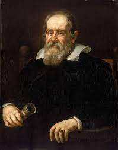
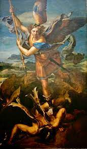

Pour en savoir plus : ici
Pour en savoir plus : ici

Pour en savoir plus : ici

Pour en savoir plus : ici
| N° | Nom | Dates | Actes majeurs | Photographie | Lien Biographie |
|---|---|---|---|---|---|
| 1 | Galilée | 1564-1642 | Il a osé affirmer que c'est la Terre qui tourne autour du soleil |  | Pour en savoir plus : ici |
| 2 | Raphaël | 1483-1520 | Tant de personnes ont eu la joie de comtempler ses peintures |  | Pour en savoir plus : ici |
| 3 | Bach | 1685-1750 | Encore aujourd'ui sa musique nous élève | |
Pour en savoir plus : ici |
| 4 | Dennis Lynn Meadows | 1942 | Il a modélisé le désastre où nous mène la croissance de la consommation | |
Pour en savoir plus : ici |